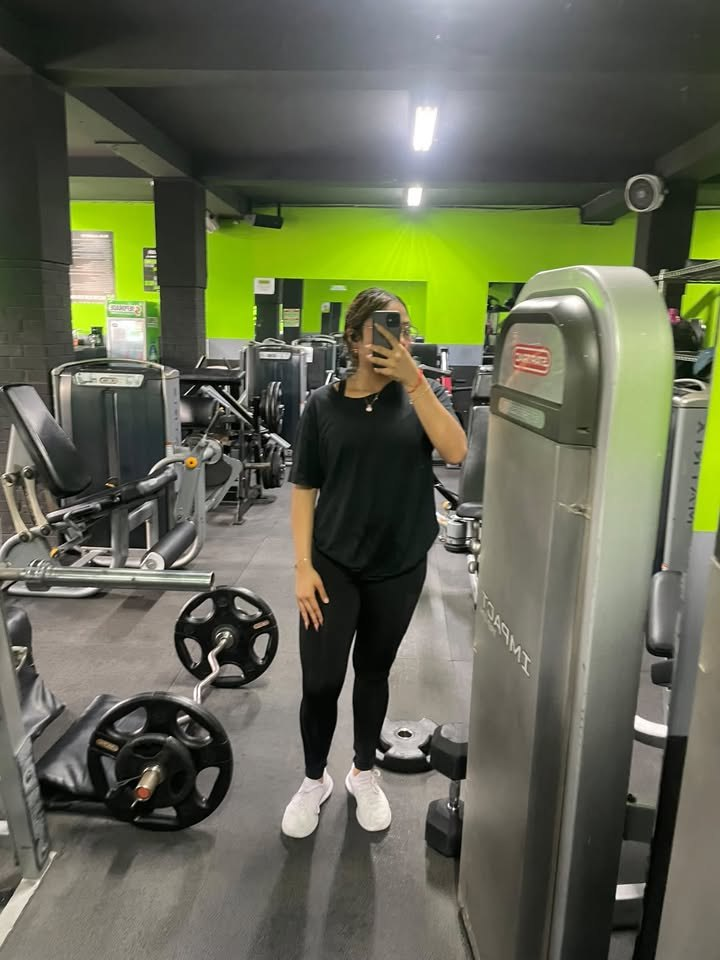
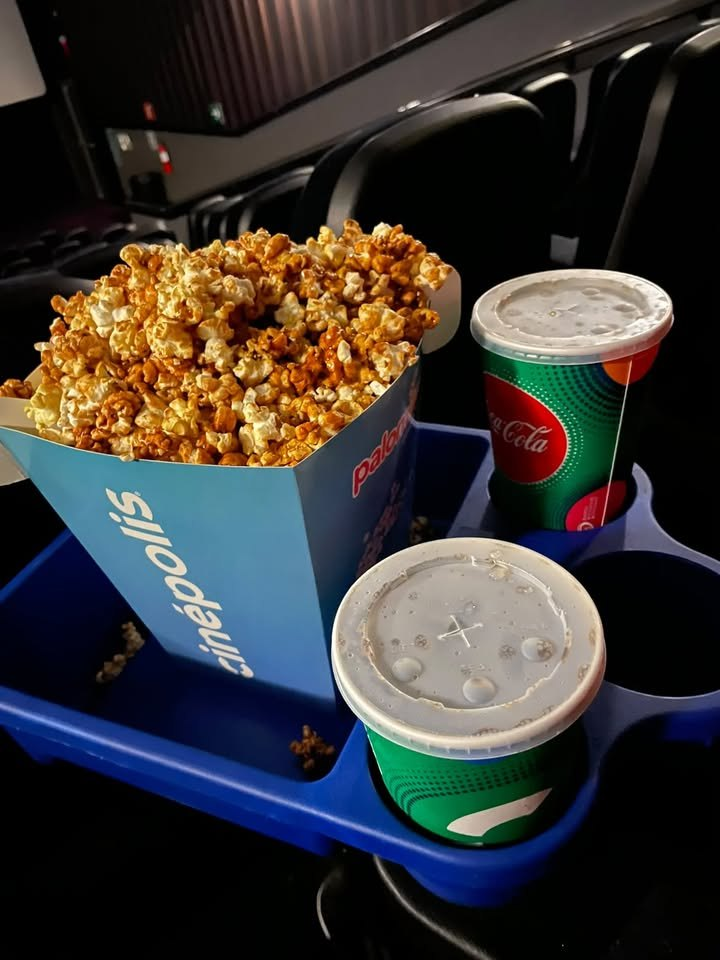
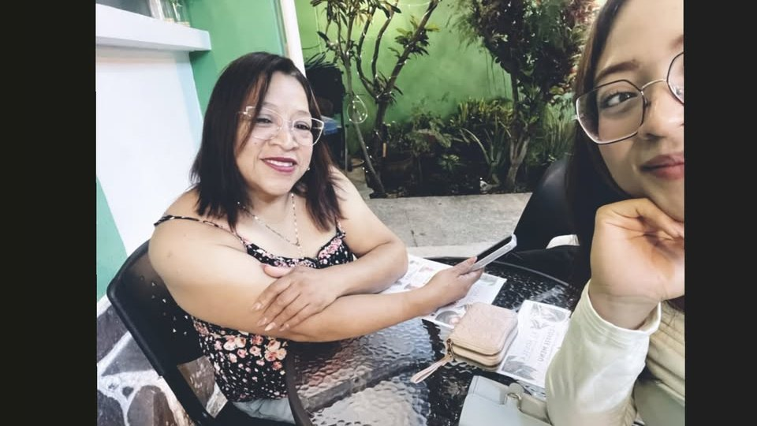
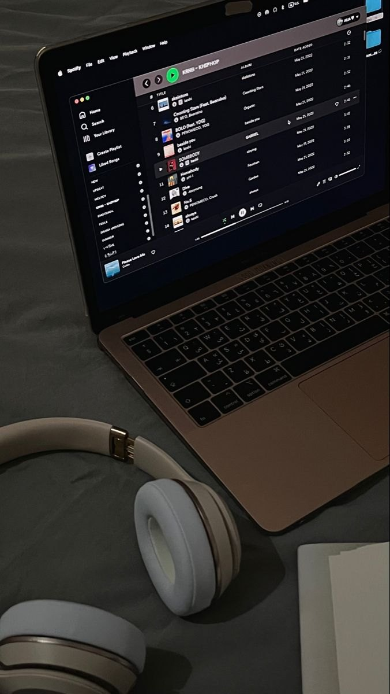

Conoce más sobre mí, mi formación académica,
mi experiencia laboral y las cosas que forman
parte de mi vida.
Cada día es una oportunidad para aprender y crecer.
Sobre mí
Soy Ruth Chavac.
Estoy aquí para escucharte.
Tengo 20 años y soy una psicóloga especializada en el
área clínica, apasionada por la salud mental y el
aprendizaje continuo. Me caracteriza una actitud
proactiva, orientada a la adquisición constante de
conocimientos y al fortalecimiento de mis habilidades
clínicas y profesionales. Destaco por mi comunicación
empática y efectiva, mi capacidad para trabajar en
equipo y mi compromiso con la responsabilidad y el
crecimiento profesional.
Creo firmemente que pedir apoyo también es una forma
de cuidarse. Por ello, busco promover un espacio de
escucha, confianza y comprensión, donde cada persona
pueda expresar sus inquietudes libremente, sin temor
a ser juzgada, y explorar herramientas que contribuyan
a su bienestar emocional y desarrollo personal.
Reconozco que cada persona tiene una historia única,
sus propios tiempos y fortalezas. Por eso, considero
fundamental brindar un acompañamiento humano,
respetuoso y sensible a las necesidades individuales,
manteniendo siempre la disposición de aprender,
adaptarme a nuevos desafíos y aportar lo mejor de mí
para apoyar a quienes lo necesitan.
Universidad:
Universidad Mariano Gálvez de Guatemala
Mi trayectoria
Formación con propósito,
aprendizaje continuo.
Mi formación académica es una parte fundamental
de mi desarrollo personal y profesional.
01 / EDUCACIÓN SUPERIOR
Licenciatura en Psicología Clínica
Estudios finalizados
Universidad Mariano Gálvez de Guatemala
- Graduada y titulada como licenciada en Psicología Clínica.
- Graduada de la Maestría en Intervenciones Psicoterapéuticas.
- Graduada de la Maestría en Criminología con Enfoque
Psicológico Forense.
02 / EDUCACIÓN ESCOLAR
Educación preprimaria a diversificado
2010 – 2023
Colegio Cristiano Torricelli
Formación académica desde el nivel preprimario
hasta el diversificado.
03 / DESARROLLO PERSONAL
Aprendizaje continuo
Me interesa continuar desarrollando mis conocimientos
y habilidades en Psicología Clínica, salud mental,
comunicación y relaciones humanas.
Mi experiencia
Responsabilidad,
organización y servicio.
Mi experiencia en el ámbito administrativo me ha
permitido fortalecer mis habilidades de organización,
comunicación y atención a las personas.
EXPERIENCIA 01
Auxiliar Contable
Colegio Torricelli
Enero de 2025 – Presente (2026)
Elaboración de planillas.
Control diario de ingresos y egresos de caja.
Emisión de recibos y facturas electrónicas de colegiaturas.
Atención y servicio al cliente.
Gestión de procesos relacionados con el IGSS
y el Ministerio de Trabajo.
EXPERIENCIA 02
Auxiliar de Secretaría
Colegio Torricelli
Enero – Diciembre de 2024
Atención y servicio al cliente.
Revisión de expedientes estudiantiles.
Manejo de procesos relacionados con el sistema SIRE.
Gestión de documentación del Ministerio de Educación.
Redacción de notas, fotocopias, llamadas
y correos electrónicos.
Actualización de registros escolares y bases de datos.
EXPERIENCIA 03
Vacacionista de Auxiliar Administrativa
Colegio Torricelli
Octubre de 2023
Atención y servicio al cliente.
Revisión de expedientes estudiantiles.
Apoyo en procesos del sistema SIRE.
Organización de papelería del Ministerio de Educación.
Redacción de notas y gestión de llamadas y correos.
Apoyo en la actualización de registros escolares
y bases de datos.
Documento profesional
Mi currículum vitae
Consulta mi formación académica,
experiencia laboral y trayectoria.
Mis pasatiempos me ayudan a recargar energías, encontrar equilibrio y disfrutar los pequeños momentos que hacen especial cada día.
♡✿
✦ CINCO FORMAS DE DISFRUTAR LA VIDA ✦

🧘♀️
01 · Movimiento
Hacer ejercicio
Me gusta mantenerme activa, cuidar mi salud y liberar el estrés con actividad física.
✧ Lo que me aportaEnergía · Constancia · Bienestar

🎬
02 · Imaginación
Ir al cine
Disfruto descubrir historias, nuevas perspectivas y momentos de diversión en la pantalla.
✧ Lo que me aportaCreatividad · Entretenimiento · Relax
☕
03 · Tranquilidad
Café y atardeceres
Una taza de café y los colores del cielo me recuerdan la belleza de las cosas sencillas.
✧ Lo que me aportaCalma · Inspiración · Gratitud

👨👩👧👦
04 · Conexión
Convivir con mi familia
Compartir conversaciones, risas y recuerdos con quienes más quiero es muy especial para mí.
✧ Lo que me aportaAmor · Apoyo · Pertenencia

🎧
05 · Armonía
Escuchar música
La música me acompaña, me inspira y me ayuda a conectar con mis emociones.
✧ Lo que me aportaMotivación · Equilibrio · Paz
Mis pasatiempos, mi equilibrio ♡
PEQUEÑOS MOMENTOS · GRANDES FELICIDADES
PSICOLOGÍA · PSICOTERAPIA · PSICOLOGÍA FORENSE
Perfil y formación profesional
Atención dirigida a niños, adolescentes,
jóvenes y adultos.
Universidad Mariano Gálvez de Guatemala
Licenciatura en Psicología Clínica
Maestría en Intervenciones Psicoterapéuticas
Maestría en Criminología con Enfoque Psicológico Forense
Profesional orientada a la salud mental,
las intervenciones psicoterapéuticas y la comprensión
del comportamiento humano en contextos clínicos
y forenses.
Maestría en Intervenciones Psicoterapéuticas
Enfocada en la evaluación e intervención psicológica
mediante estrategias psicoterapéuticas adaptadas
a las necesidades de las personas.
Maestría en Criminología con Enfoque Psicológico Forense
Orientada al estudio del comportamiento humano
relacionado con el ámbito criminológico y judicial.